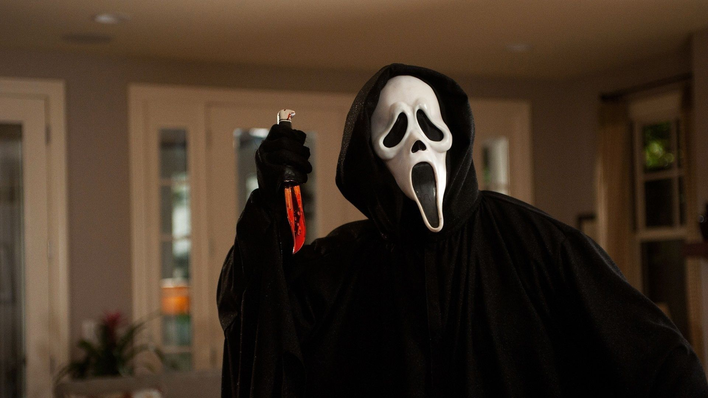
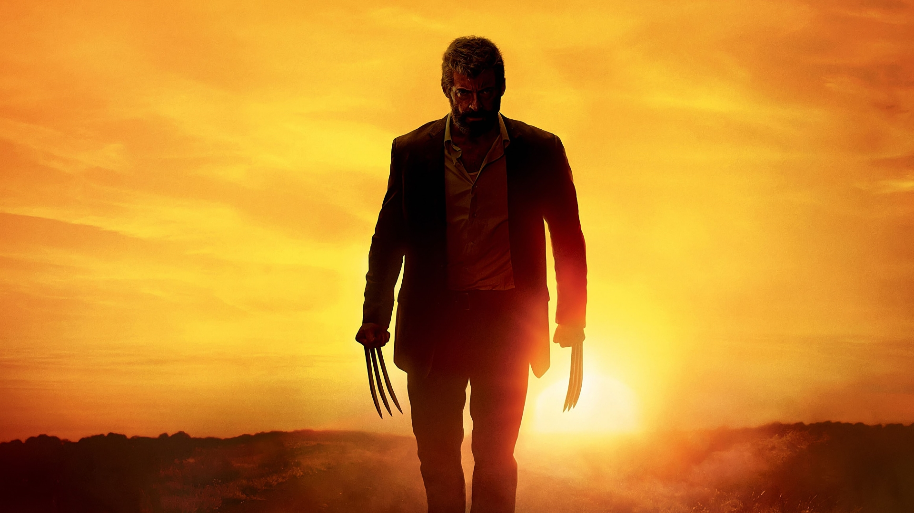
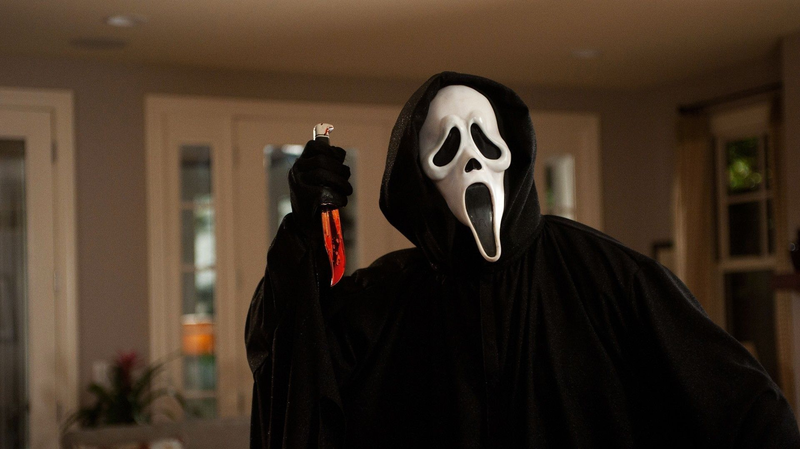
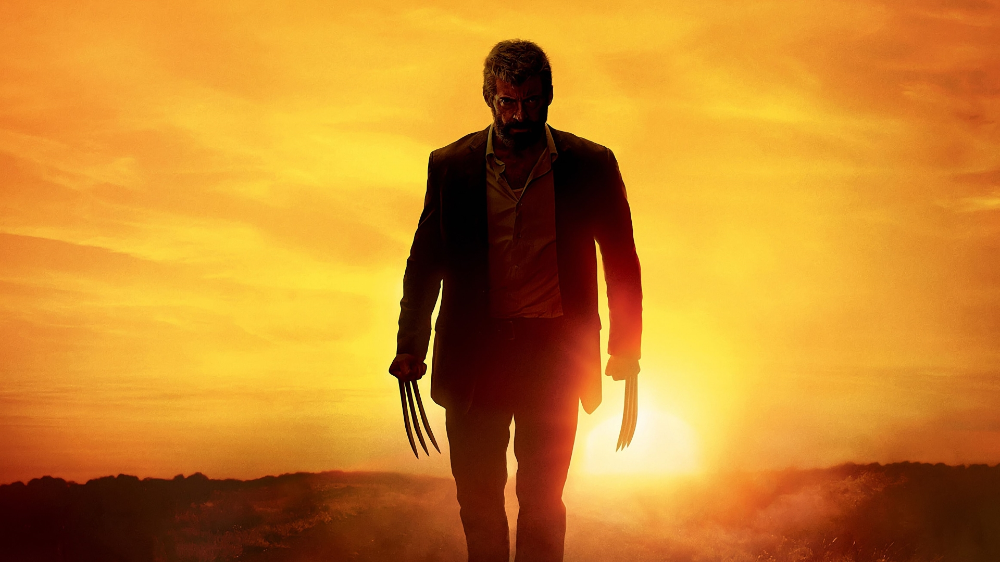
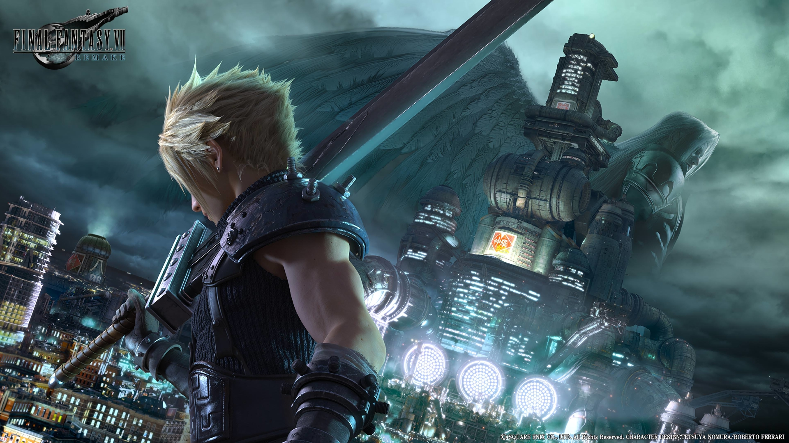

Things I like to watch
 




I don't watch a lot of movies or tv anymore and I am not that into anime but here are some things I enjoyed watching or just getting into:
- Death Note
- Dragon Ball
- Jojo's Bizzare Adventure
- Logan
- Marvel Movies
- My Hero Academia
- Naruto
- Star Wars
- Stranger Things
- The Boys
- The Office


As of right now, Jojo's Bizzare Adventure is my favorite one. Jojo's Bizzare Adventure is about the Joestar family, with each part focusing on a different member of the Joestar family. The Joestars mostly use supernatural entities known as "Stands" to fight other Stand users like a Vampire, ancient humanoids, a mafia boss, and even the president of the United States (a fictional one). The reason why I love Jojo so much is that I just love the idea that almost anyone can have a stand and there are some pretty cool and creative stands that I was just eager to learn more about and I really like the characters. I started watching Jojo in high school and has become special to me because it got me through some things. Now Jojo is not for everyone, and I would not recommend watching it as a first anime, I heard that some people did not like the art style or found it too boring which is completely understandable. Regardless, I really enjoyed watching Jojo so much that I started reading the manga because it has not been animated yet and I wanted to read parts 6-8, and part 7: Steel Ball Run is my favorite one to date.
Favorite Music
I was never that into music but recently I have been listening to:
- AC/DC
- David Bowie
- Fall Out Boy
- Fleetwood Mac
- Gorillaz
Favorite Video Games



I really enjoy playing video games, and even though I do not have enough time to play them anymore, it is my favorite thing to do. When I have time I either play online with friends or play a single-player game. I can't decide what my absolute favorite games are so here is a list of some of my favorite video game series:
- Devil May Cry
- Dead by Daylight
- Fighting games in general
- Final Fantasy VII (Original and Remake)
- Grand Theft Auto
- Mario
- League of Legends
- Pokemon
- Sonic
- Super Smash Bros Ultimate
- The Legend of Zelda
One of my favorite types of video games is fighting games. While I may not be that good at them, I try to get better, and even though it can be frustrating at times, I enjoy playing them. I love how not only do I need to have quick reactions but I also have to pay close attention to my opponent's habits. Also compared to games like League of Legends, Overwatch, and CSGO, I enjoy having that 1-on-1 face-off. When you win it feels so satisfying because unlike team games in a fighting game you earned that victory yourself. You outplayed your opponent. Also, I just like executing combos because they look so cool and flashy at times. The fighting games I would like to get better at are: Dragon Ball Fighterz, Mortal Kombat 11, and Super Smash Bros Ultimate. I would like to compete in tournaments but right now I am focusing on getting better online not only because of COVID but because I want to get a little bit better before I start competing.